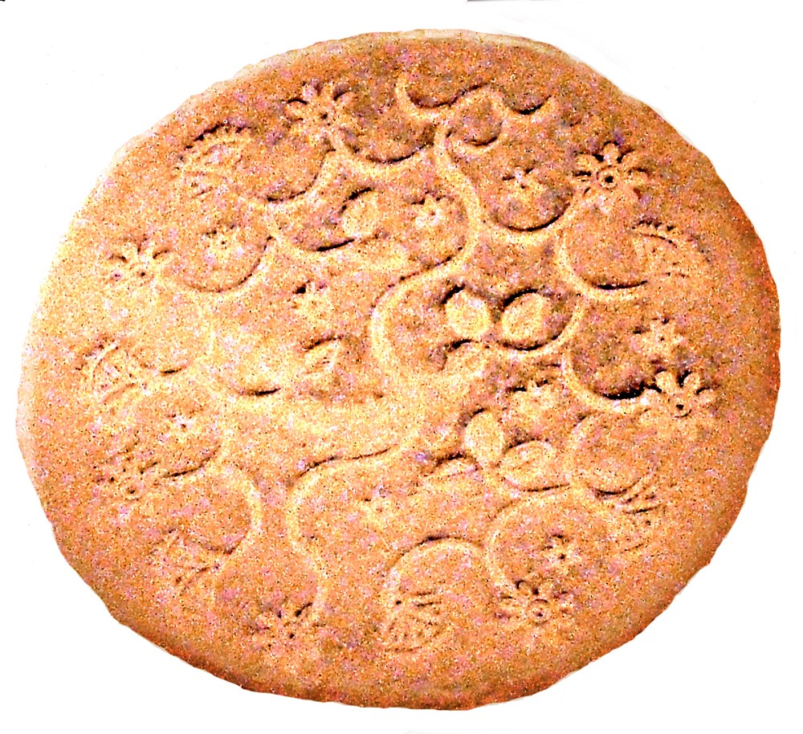
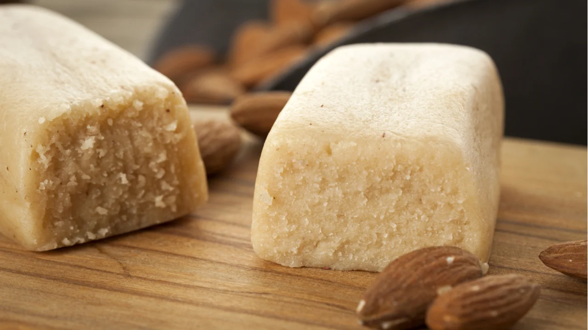
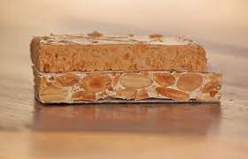

La repostería en la Edad Media Siguiendo con la historia de la repostería llegamos a la Edad Media. Las cruzadas hicieron que muchos ingredientes de Oriente Medio se comercializaran en Europa. De este modo, muchos pasteles comenzaron a crearse en la Edad Media de forma exclusiva para la aristocracia. Los conventos y monasterios fueron quienes más contribuyeron al desarrollo de la repostería, puesto que idearon métodos para la conservación de los alimentos.
De esta forma, crearon la primera versión de leche condensada. Además de ello, una de las formas en que la repostería se extendió a más personas y dejó de estar solo en la realeza fue, en Francia, cuando empezaron a surgir los obloiers. Estos eran grupos que se dedicaban a hacer obleas u hostias para las misas religiosas. Sin embargo, con el transcurrir del tiempo, este mismo grupo comenzó a vender estas obleas a distintas personas agregando miel y otros ingredientes dulces.
Así es como la repostería artesanal fue más cercana para el pueblo. Mientras esto sucedía en Europa, en Oriente Medio se desarrolló el arte hornear dulces con uno de los personajes más famosos de la historia de la repostería. Su nombre fue Bartolome Scappi, el primer cocinero en investigar la repostería árabe, y fue quien desarrolló métodos sofisticados para hacer pasteles dulces y salados. De esta manera, creó más de 200 recetas de repostería. Uno de los más conocidos hasta el día de hoy es la masa de hojaldre, un pastel hecho con capas de masa, doblado y después enrollado.
Gracias a los nuevos ingredientes que surgieron en esta época, como el azúcar y el hojaldre, empezaron a surgir cada vez más recetas dulces de repostería.
Obleas: uno de los inventos de repostería más populares del periodo.
Mazapán: originalmente un postre consumido durante el Ramadán, que se popularizó en España durante el reinado de Alfonso,VII.

Turrón: este alimento tan famoso en la repostería de la actualidad, surge de una receta árabe.
En el siglo XIX los franceses inventan el “dessert”, palabra que tiene su origen en el verbo “desservir” o “recoger la mesa”. Cuando la mesa queda libre de platos y copas, llega el momento de las sorpresas dulces, los postres.
El auge de la repostería y la confitería vino acompañado del incremento en el nivel de vida de los siglos XIX y XX y estas han alcanzado un nivel de especialización y refinamiento muy elevado en solo 200 años. El siglo XX ha sido el siglo en el que hemos empezado a preocuparnos por todos esos problemas de salud o de estética, que comienzan por la alimentación. El azúcar se convirtió rápidamente en uno de los productos más consumidos y eso, como cualquier exceso, repercute en problemas de salud de todo tipo. Hoy en día se calcula que un 70% de los españoles deben, por un motivo u otro, suprimir, reducir o controlar el consumo de azúcar.